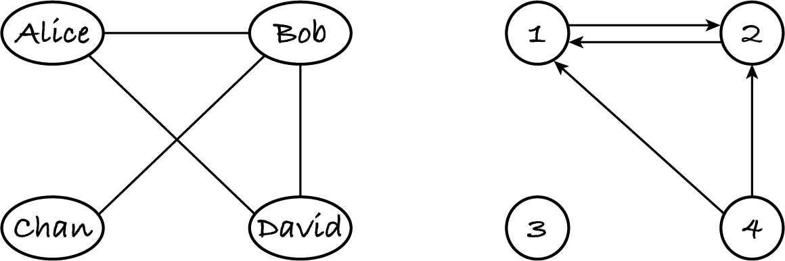
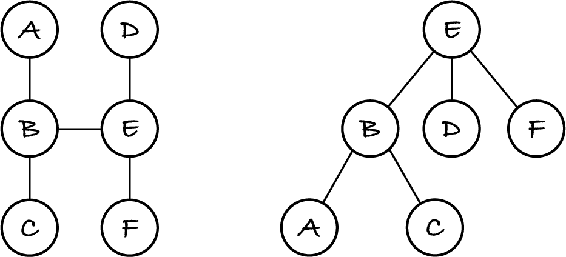
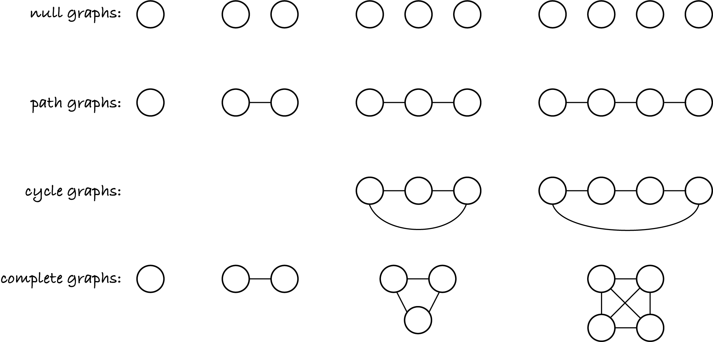

17.2. Basic concepts
Before I introduce the graph ADT and associated data structures and algorithms, we need a bit more jargon, to facilitate communication. I use the same graphs as before to illustrate the concepts.
17.2.1. On nodes and edges
Two nodes are adjacent if they’re connected by an edge. Nodes 2 and 4 are adjacent; ‘Alice’ and ‘Chan’ aren’t. The neighbours of a node are all the nodes adjacent to it. The neighbours of node 1 are nodes 2 and 4.
In a digraph, if there’s a edge from A to B, which we write as the pair (A, B), then A is an in-neighbour of B and B an out-neighbour of A. Node 4 has two out-neighbours and no in-neighbour.
The degree of a node is the number of edges attached to it, e.g. ‘Alice’ has degree 2. In a digraph, a node’s out-degree is the number of outgoing edges and its in-degree is the number of incoming edges. Node 1 has out-degree 1 and in-degree 2; it therefore has degree 3.
Although the distinction between in- and out-neighbours and between in- and out-degrees only makes sense for digraphs, I’ll use the terms for undirected graphs too, to simplify explanations.
In undirected graphs, edges (A, B) and (B, A) are the same, i.e. each edge can be seen as both outgoing and incoming, so the in- and the out-neighbours are the same as the neighbours and the in- and out-degree are the same as the degree. For example, ‘Alice’ and ‘Bob’ are both the in-neighbours and the out-neighbours of ‘David’. Therefore the in-degree, out-degree and degree of ‘David’ are all 2.
In a digraph, the degree of a node is the sum of its in- and out- degrees. In an undirected graph, it’s half the sum, because each edge counts both as incoming and outgoing.
What are the degrees of nodes ‘Chan’ and 3 in the above graphs?
Node ‘Chan’ has degree one and node 3 has degree zero.
Exercise 17.2.1
An advertising agency wants to advertise a product in some train stations. They give you the undirected graph of all the train stations in your country, with edges representing direct trains between them. The names of stations were replaced with numbers, to avoid bias by anyone working on the dataset. You’re asked to produce a set of the train station(s) where the advert is likely to be seen by more people than in other stations.
Complete the following sentence:
I would select those nodes that … because …
17.2.2. On graphs
A path from node first to node last is a sequence of distinct nodes
(first, second, third, …, penultimate, last)
such that edges (first, second), (second, third), …, (penultimate, last) exist and are distinct. To put it bluntly, a path doesn’t waste time going twice through a node or edge. The length of a path is the number of edges. Node B is reachable from node A if there’s a path from A to B.
There may be multiple paths between the same nodes, e.g. (4, 1) and (4, 2, 1) are both paths from 4 to 1 in the example digraph. For most practical problems, we’re interested in a shortest path, with the fewest edges.
In the undirected graph, sequence (‘Alice’, ‘Bob’, ‘Alice’) isn’t a path because it repeats one node and one edge. Sequence (‘Alice’, ‘David’, ‘Bob’, ‘Chan’) is a path of length 3.
In the digraph, (1, 2, 1) isn’t a path because, although it has no duplicate edges, it repeats node 1. Sequence (1, 4, 2) isn’t a path either because edge (1, 4) doesn’t exist.
A undirected graph is connected if there’s one node, let’s call it S, from which all other nodes are reachable; otherwise it’s disconnected. It follows that in a connected undirected graph all nodes are mutually reachable. To see why, consider any two nodes A and B. There’s a path from S to A and one from S to B because the graph is connected. Since edges are undirected, the reverse paths from A to S and from B to S exist too. So, the paths from A to B via S and from B to A via S exist, proving that any nodes A and B are mutually reachable.
A digraph is connected (or disconnected) if, when removing the edge directions, we get a connected (or disconnected) undirected graph. The example digraph is disconnected because there’s no path from or to node 3. We’ll look at connectivity in digraphs later.
A cycle is a path except that the first and last nodes are the same. Since paths don’t repeat edges, neither do cycles. Sequence (‘Alice’, ‘Bob’, ‘Alice’) isn’t a cycle in the undirected graph, because it repeats one edge, but (‘Alice’, ‘Bob’, ‘David’, ‘Alice’) is. Sequence (1, 2, 1) is a cycle in the digraph, because it doesn’t repeat edges.
A graph is acyclic if it has no cycles. A directed acyclic graph is abbreviated DAG.
The previous chapter introduced several kinds of rooted trees. We can now see them as special kinds of graphs. A tree is a connected acyclic undirected graph. A tree is rooted if one of its nodes is designated as the root. The neighbours of the root are the root’s children, their neighbours are the nodes in level 2 of the rooted tree, and so on. The next figure shows on the left a tree and on the right the same tree rooted at node E.
In graphs, and therefore in trees, the neighbours of a node are in no particular order. In a rooted tree, one of the neighbours is the parent, but the other neighbours, the children, still aren’t ordered. A binary tree is a rooted tree with ordered children: there’s a left and a right child.
In a rooted tree there’s a single path from any start node S to any other final node F: go up from S to the deepest common ancestor of S and F and then go down to F. For the tree rooted in E, the path from A to D goes through their deepest common ancestor, which happens to be the root: A, B, E, D. Since every tree can be transformed into a hierarchical tree by designating a root, it follows that in any tree there’s a single path from any node to any other node. Another way to see that this must be so is to imagine there are two different paths from A to B. Then we could go from A to B following one path and return from B to A following the reverse of the other path. This would lead to a cycle, contrary to the assumption of being a tree.
A rooted tree with n nodes has n – 1 edges, because each node except the root has a single edge to its parent. Since every tree can become a rooted tree, all trees have one edge less than the number of nodes.
Note: In M269, in the context of graphs, n refers to the number of nodes and e to the number of edges.
A graph is dense if it has many of the possible edges; it is sparse if it has few of the possible edges. The higher the ratio of edges to nodes, the denser the graph. Some graphs are clearly sparse, others are clearly dense, but for some it’s in the eye of the beholder.
Trees are sparse because they have fewer edges than nodes, i.e. the edge/node ratio is less than one. Most large real-world networks have far more edges than nodes but nevertheless are clearly sparse because they have a tiny fraction of the possible edges. For example, in a city’s road network, a junction typically only connects to three or four of the hundreds of junctions in the city, and in a social network we have very few friends among the millions of users.
17.2.3. Special graphs
The following graphs rarely occur when modelling real networks, but they’re useful edge cases to test algorithms.
The empty graph has no nodes and hence no edges. A null graph is a non-empty graph without edges.
A path graph is a non-empty undirected graph in which the nodes can be numbered sequentially and the edges are between nodes 1 and 2, nodes 2 and 3, and so on. Path graphs are trees. If you extract a path from an undirected graph, you obtain a path graph.
A cycle graph is an undirected graph with at least three nodes. It’s obtained from a path graph by connecting the last node to the first. Cycle graphs are cyclic, hence their name.
A complete graph is an undirected graph where each node is connected to every other one.
The next figure shows the null, path and complete graphs with one to four nodes, and the cycle graphs with three and four nodes. I haven’t labelled the nodes.
Note that some graphs are special in multiple ways, e.g. the graph with a single node is a null, path and complete graph, and the cycle graph with three nodes is also complete.
A cycle graph with one node would have an edge connecting the node to itself. A cycle graph with two nodes would have two edges between them. Neither situation is allowed by our undirected graph definition, so in M269 cycle graphs have at least three nodes.
Exercise 17.2.2
What are the degrees of the nodes in a
null
path
cycle
complete
graph with n > 0 nodes (and n ≥ 3 for cycle graphs)?
Exercise 17.2.3
What is the number of edges in a
path
cycle
complete
graph with n > 0 nodes (and n ≥ 3 for cycle graphs)? For each graph, write an expression based on n.
Exercise 17.2.4
Is a
null
path
cycle
complete
graph with many nodes sparse or dense?
17.2.4. ADT
Each of the above concepts can be turned into an operation for a graph ADT, e.g. an operation to check if two given nodes are mutually reachable, but the basic operations required are those on nodes and edges. Here are they for a digraph ADT:
Operation |
Effect |
In algorithms |
|---|---|---|
new |
create an empty graph |
let g be an empty graph |
has node |
check if node a exists |
a in g |
add node |
add a node a to a graph |
add a to g |
remove node |
remove a node and its edges |
remove a from g |
has edge |
check if an edge exists |
(a, b) in g |
add edge |
add a directed edge |
add (a, b) to g |
remove edge |
remove a directed edge |
remove (a, b) from g |
nodes |
return the set of all nodes |
nodes of g |
edges |
return the set of all directed edges |
edges of g |
in-neighbours |
return a node’s set of in-neighbours |
in-neighbours of a in g |
out-neighbours |
return a node’s set of out-neighbours |
out-neighbours of a in g |
neighbours |
return the union of the in- and out-neighbours |
neighbours of a in g |
in-degree |
return the in-degree of a node |
in-degree of a in g |
out-degree |
return the out-degree of a node |
out-degree of a in g |
degree |
return the sum of the in- and out-degree |
degree of a in g |
The undirected graph ADT has the same operations, but some have a different effect because they operate on undirected rather than directed edges:
the operations on neighbours and degrees return the same set or the same number, for the same node
the operations to add or remove an edge must add and remove the opposing edge too.
As an example of how graph algorithms will be written, here’s a simple one, to isolate a given node in an undirected graph.
for each neighbour in neighbours of node in graph:
remove edge (node, neighbour)